Essential
농장
농장 루트
농장 계열 시설은 원재료를 생산하고, 생산된 재료는 공장 또는 상점 흐름으로 연결됩니다.
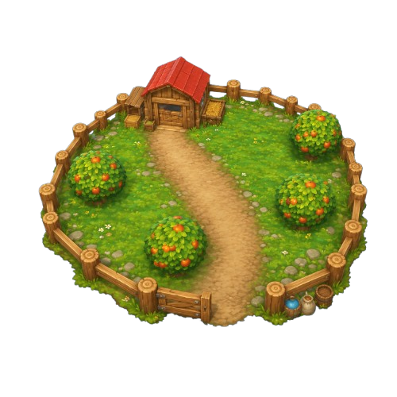
농장
과일, 식물, 곡물 같은 기본 재료를 생산합니다.
생산된 재료는 공장 공정의 입력값이 되거나, 일부는 바로 판매 흐름에 연결됩니다.
생산 아이템 57개
| 이미지 | 아이템 | 타입 | 분류 | 가격 | 쿨타임 | 생산 갯수 |
|---|---|---|---|---|---|---|
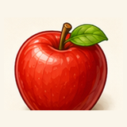 | Apple | Resource | Fruit | 1 | 5초 | 5개 |
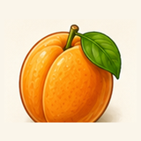 | Apricot | Resource | Fruit | 1 | 5초 | 5개 |
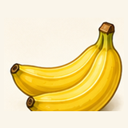 | Banana | Resource | Fruit | 1 | 5초 | 5개 |
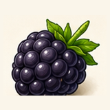 | Blackberry | Resource | Fruit | 1 | 5초 | 5개 |
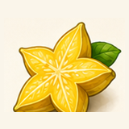 | Starfruit | Resource | Fruit | 1 | 5초 | 5개 |
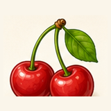 | Cherry | Resource | Fruit | 1 | 5초 | 5개 |
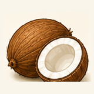 | Coconut | Resource | Fruit | 1 | 5초 | 5개 |
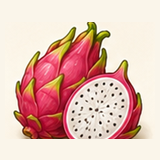 | Dragon fruit | Resource | Fruit | 1 | 5초 | 5개 |
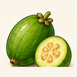 | Feijoa | Resource | Fruit | 1 | 5초 | 5개 |
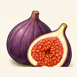 | Fig | Resource | Fruit | 1 | 5초 | 5개 |
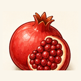 | Garnet | Resource | Fruit | 1 | 5초 | 5개 |
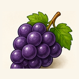 | Grape | Resource | Fruit | 1 | 5초 | 5개 |
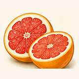 | Grapefruit | Resource | Fruit | 1 | 5초 | 5개 |
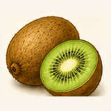 | Kiwi | Resource | Fruit | 1 | 5초 | 5개 |
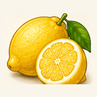 | Lemon | Resource | Fruit | 1 | 5초 | 5개 |
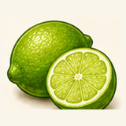 | Lime | Resource | Fruit | 1 | 5초 | 5개 |
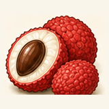 | Lychee | Resource | Fruit | 1 | 5초 | 5개 |
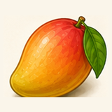 | Mango | Resource | Fruit | 1 | 5초 | 5개 |
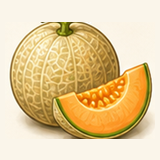 | Melon | Resource | Fruit | 1 | 5초 | 5개 |
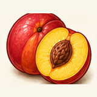 | Nectarine | Resource | Fruit | 1 | 5초 | 5개 |
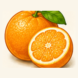 | Orange | Resource | Fruit | 1 | 5초 | 5개 |
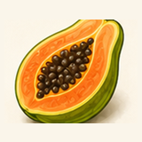 | Papaya | Resource | Fruit | 1 | 5초 | 5개 |
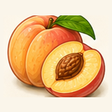 | Peach | Resource | Fruit | 1 | 5초 | 5개 |
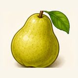 | Pear | Resource | Fruit | 1 | 5초 | 5개 |
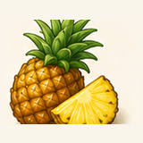 | Pineapple | Resource | Fruit | 1 | 5초 | 5개 |
 | Plum | Resource | Fruit | 1 | 5초 | 5개 |
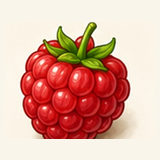 | Raspberry | Resource | Fruit | 1 | 5초 | 5개 |
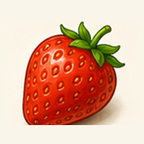 | Strawberry | Resource | Fruit | 1 | 5초 | 5개 |
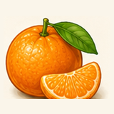 | Tangerine | Resource | Fruit | 1 | 5초 | 5개 |
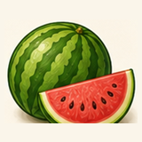 | Watermelon | Resource | Fruit | 1 | 5초 | 5개 |
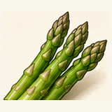 | Asparagus | Resource | Plant | 1 | 5초 | 5개 |
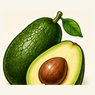 | Avocado | Resource | Plant | 1 | 5초 | 5개 |
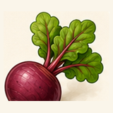 | Beet | Resource | Plant | 1 | 5초 | 5개 |
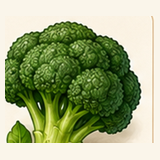 | Broccoli | Resource | Plant | 1 | 5초 | 5개 |
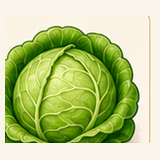 | Cabbage | Resource | Plant | 1 | 5초 | 5개 |
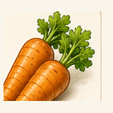 | Carrots | Resource | Plant | 1 | 5초 | 5개 |
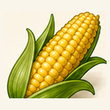 | Corn | Resource | Plant|Grain | 1 | 5초 | 5개 |
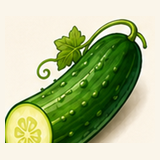 | Cucumber | Resource | Plant | 1 | 5초 | 5개 |
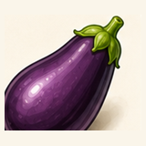 | Eggplant | Resource | Plant | 1 | 5초 | 5개 |
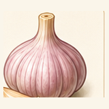 | Garlic | Resource | Plant|Spice | 1 | 5초 | 5개 |
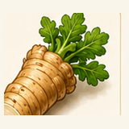 | Horseradish | Resource | Plant|Spice | 1 | 5초 | 5개 |
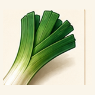 | Leek | Resource | Plant | 1 | 5초 | 5개 |
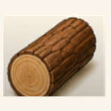 | Log | Resource | Plant|Wood | 1 | 5초 | 5개 |
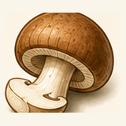 | Mushroom | Resource | Plant|Mushroom | 1 | 5초 | 5개 |
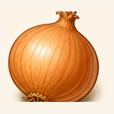 | Onion | Resource | Plant|Spice | 1 | 5초 | 5개 |
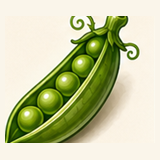 | Pea | Resource | Plant | 1 | 5초 | 5개 |
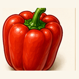 | Pepper | Resource | Plant|Spice | 1 | 5초 | 5개 |
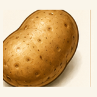 | Potato | Resource | Plant | 1 | 5초 | 5개 |
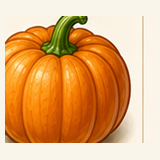 | Pumpkin | Resource | Plant | 1 | 5초 | 5개 |
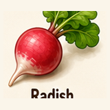 | Radish | Resource | Plant | 1 | 5초 | 5개 |
| Squash | Resource | Plant | 1 | 5초 | 5개 | |
| Tomato | Resource | Plant | 1 | 5초 | 5개 | |
| Wheat | Resource | Plant|Grain | 1 | 5초 | 5개 | |
| Zucchini | Resource | Plant | 1 | 5초 | 5개 | |
| Cinnamon | Resource | Plant|Spice | 1 | 5초 | 5개 | |
| Kakao | Resource | Plant | 1 | 5초 | 5개 | |
| SugarCane | Resource | Plant|Material | 1 | 5초 | 5개 |
광산
광석과 금속 계열 원재료를 생산합니다.
기계 부품과 고급 상품 제작 흐름으로 이어집니다.
생산 아이템 28개
| 이미지 | 아이템 | 타입 | 분류 | 가격 | 쿨타임 | 생산 갯수 |
|---|---|---|---|---|---|---|
| AdamantiteOre | Resource | Ore | 1 | 5초 | 5개 | |
| BronziteOre | Resource | Ore | 1 | 5초 | 5개 | |
| GildronOre | Resource | Ore | 1 | 5초 | 5개 | |
| FerrosOre | Resource | Ore | 1 | 5초 | 5개 | |
| MeteoriticOre | Resource | Ore | 1 | 5초 | 5개 | |
| MytheriumOre | Resource | Ore | 1 | 5초 | 5개 | |
| RunestoneOre | Resource | Ore | 1 | 5초 | 5개 | |
| SilvariteOre | Resource | Ore | 1 | 5초 | 5개 | |
| GoldOre | Resource | Ore | 1 | 5초 | 5개 | |
| LunasilverOre | Resource | Ore | 1 | 5초 | 5개 | |
| AdamirOre | Resource | Ore | 1 | 5초 | 5개 | |
| BronziumOre | Resource | Ore | 1 | 5초 | 5개 | |
| AuricOre | Resource | Ore | 1 | 5초 | 5개 | |
| FerranOre | Resource | Ore | 1 | 5초 | 5개 | |
| VoidrockOre | Resource | Ore | 1 | 5초 | 5개 | |
| MythriteOre | Resource | Ore | 1 | 5초 | 5개 | |
| RunariteOre | Resource | Ore | 1 | 5초 | 5개 | |
| SilliumOre | Resource | Ore | 1 | 5초 | 5개 | |
| AdramOre | Resource | Ore | 1 | 5초 | 5개 | |
| BronzarkOre | Resource | Ore | 1 | 5초 | 5개 | |
| GoldrethOre | Resource | Ore | 1 | 5초 | 5개 | |
| CopperOre | Resource | Ore | 1 | 5초 | 5개 | |
| SilverOre | Resource | Ore | 1 | 5초 | 5개 | |
| MythrialOre | Resource | Ore | 1 | 5초 | 5개 | |
| RunethOre | Resource | Ore | 1 | 5초 | 5개 | |
| SilvenOre | Resource | Ore | 1 | 5초 | 5개 | |
| MithradenOre | Resource | Ore | 1 | 5초 | 5개 | |
| Rubber | Resource | Material | 1 | 5초 | 5개 |
목장
동물 계열 원재료를 생산합니다.
동물 자원은 식품, 생활 재료, 판매 흐름에 연결됩니다.
생산 아이템 36개
| 이미지 | 아이템 | 타입 | 분류 | 가격 | 쿨타임 | 생산 갯수 |
|---|---|---|---|---|---|---|
| GoatBlue | Resource | Animal | 1 | 5초 | 5개 | |
| Capybara | Resource | Animal | 1 | 5초 | 5개 | |
| ElephantGray | Resource | Animal | 1 | 5초 | 5개 | |
| TurkeyPink | Resource | Animal | 1 | 5초 | 5개 | |
| SealGray | Resource | Animal | 1 | 5초 | 5개 | |
| SeagullBrown | Resource | Animal | 1 | 5초 | 5개 | |
| BirdGreen | Resource | Animal | 1 | 5초 | 5개 | |
| RamBrown | Resource | Animal | 1 | 5초 | 5개 | |
| BirdOrange | Resource | Animal | 1 | 5초 | 5개 | |
| DeerFawn | Resource | Animal | 1 | 5초 | 5개 | |
| FlamingoPink | Resource | Animal | 1 | 5초 | 5개 | |
| BirdRainbow | Resource | Animal | 1 | 5초 | 5개 | |
| TigerCub | Resource | Animal | 1 | 5초 | 5개 | |
| BirdYellow | Resource | Animal | 1 | 5초 | 5개 | |
| Zebra | Resource | Animal | 1 | 5초 | 5개 | |
| Squirrel | Resource | Animal | 1 | 5초 | 5개 | |
| SnailPurple | Resource | Animal | 1 | 5초 | 5개 | |
| MushroomGreen | Resource | Animal | 1 | 5초 | 5개 | |
| BirdSmallRed | Resource | Animal | 1 | 5초 | 5개 | |
| GiraffeCub | Resource | Animal | 1 | 5초 | 5개 | |
| CheetahCub | Resource | Animal | 1 | 5초 | 5개 | |
| DeerOrange | Resource | Animal | 1 | 5초 | 5개 | |
| Fawn | Resource | Animal | 1 | 5초 | 5개 | |
| LeopardCub | Resource | Animal | 1 | 5초 | 5개 | |
| Raccoon | Resource | Animal | 1 | 5초 | 5개 | |
| Snake | Resource | Animal | 1 | 5초 | 5개 | |
| Wolf | Resource | Animal | 1 | 5초 | 5개 | |
| Cat | Resource | Animal | 1 | 5초 | 5개 | |
| Dog | Resource | Animal | 1 | 5초 | 5개 | |
| Dove | Resource | Animal | 1 | 5초 | 5개 | |
| Goldfish | Resource | Animal | 1 | 5초 | 5개 | |
| Mouse | Resource | Animal | 1 | 5초 | 5개 | |
| Parrot | Resource | Animal | 1 | 5초 | 5개 | |
| Pigeon | Resource | Animal | 1 | 5초 | 5개 | |
| Rabbit | Resource | Animal | 1 | 5초 | 5개 | |
| Tortoise | Resource | Animal | 1 | 5초 | 5개 |
연못
생선과 수산 계열 원재료를 생산합니다.
음식 상품과 해산물 세트 제작의 핵심 재료입니다.
생산 아이템 30개
| 이미지 | 아이템 | 타입 | 분류 | 가격 | 쿨타임 | 생산 갯수 |
|---|---|---|---|---|---|---|
| GreenSnapper | Resource | Fish | 1 | 5초 | 5개 | |
| StripedPike | Resource | Fish | 1 | 5초 | 5개 | |
| RedGurnard | Resource | Fish | 1 | 5초 | 5개 | |
| JungleFish | Resource | Fish | 1 | 5초 | 5개 | |
| TigerMinnow | Resource | Fish | 1 | 5초 | 5개 | |
| ChubbyIcefish | Resource | Fish | 1 | 5초 | 5개 | |
| BlobAngler | Resource | Fish | 1 | 5초 | 5개 | |
| BlueGoby | Resource | Fish | 1 | 5초 | 5개 | |
| SpottedGrouper | Resource | Fish | 1 | 5초 | 5개 | |
| SilverPompano | Resource | Fish | 1 | 5초 | 5개 | |
| Steelhead | Resource | Fish | 1 | 5초 | 5개 | |
| CrimsonBream | Resource | Fish | 1 | 5초 | 5개 | |
| NightDarter | Resource | Fish | 1 | 5초 | 5개 | |
| LimePerch | Resource | Fish | 1 | 5초 | 5개 | |
| SkyTuna | Resource | Fish | 1 | 5초 | 5개 | |
| PinkSeabass | Resource | Fish | 1 | 5초 | 5개 | |
| BlueMackerel | Resource | Fish | 1 | 5초 | 5개 | |
| CrimsonRockfish | Resource | Fish | 1 | 5초 | 5개 | |
| FlameTang | Resource | Fish | 1 | 5초 | 5개 | |
| BrownBarracuda | Resource | Fish | 1 | 5초 | 5개 | |
| NeedleSardine | Resource | Fish | 1 | 5초 | 5개 | |
| LavenderTrout | Resource | Fish | 1 | 5초 | 5개 | |
| ShortfinMarlin | Resource | Fish | 1 | 5초 | 5개 | |
| OceanTuna | Resource | Fish | 1 | 5초 | 5개 | |
| GhostPomfret | Resource | Fish | 1 | 5초 | 5개 | |
| DuskyWhiting | Resource | Fish | 1 | 5초 | 5개 | |
| OliveSunfish | Resource | Fish | 1 | 5초 | 5개 | |
| BigeyeGrouper | Resource | Fish | 1 | 5초 | 5개 | |
| ZebraCatfish | Resource | Fish | 1 | 5초 | 5개 | |
| GoldenBass | Resource | Fish | 1 | 5초 | 5개 |